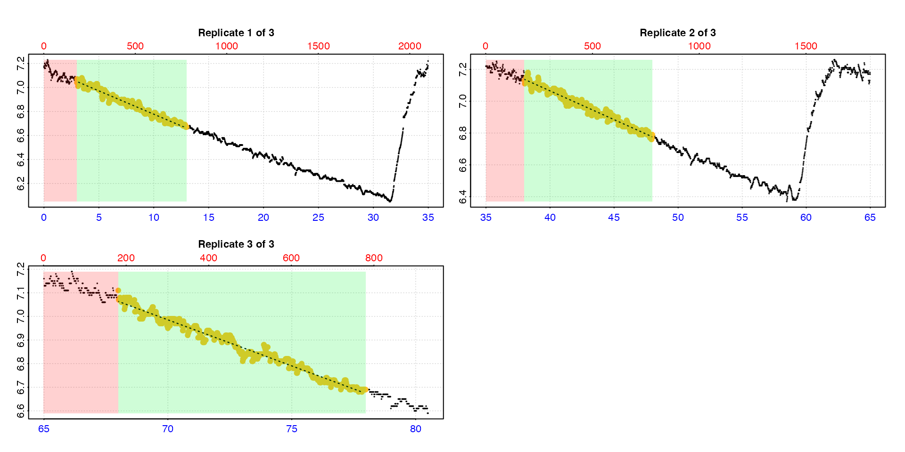
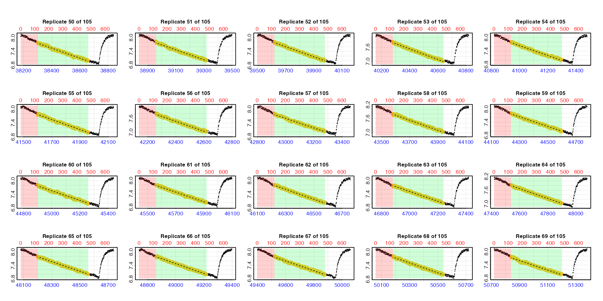

vignettes/calc_rate.int.Rmd
calc_rate.int.Rmdcalc_rate.int() is a function for manually determining
rates across user-defined ranges of row or time in each replicate in
intermittent-flow respirometry data. This page contains descriptions and
simple examples of the functionality. See also the help file at
help("calc_rate.int"), see
vignette("intermittent_short") for how it can be used to
analyse a relatively brief intermittent-flow respirometry experiment,
and vignette("intermittent_long") for an example of
analysing a longer experiment.
How calc_rate.int works is fairly straightforward. The
function uses the starts locations to subset each replicate
from the data in x. It extracts a rate using the
wait and measure inputs in the by
metric.
A calc_rate object is saved for each replicate in the
output in $results, and the output $summary
table contains the results from all replicates in order with the
$rep column indicating the replicate number. This output
object can be passed to subsequent functions such as
adjust_rate() and convert_rate() for further
processing.
There are two required inputs:
x: The time~oxygen data from a single
intermittent-flow experiment as either a data.frame or an
inspect object
starts: The location of the start of each replicate.
This can be either:
x it
should be subset so that it does. See subset_data() and
examples below for how to do this.wait: Rows or time period to exclude at the start of
each replicate.
measure: Rows or time period over which to calculate
rate in each replicate. Applied directly after wait
phase.
by: Method by which starts,
wait and measure are applied. Either
"row" or "time".
plot: Controls if a plot is produced. See Plot section.
The urchin dataset used for examples below is the
included intermittent.rd example data with the time values
changed to minutes to better demonstrate time region selection.
Experimental data such as volume, weight, and row locations of
replicates, flushes etc. can be found in the data help file:
?intermittent.rd.
urchin <- intermittent.rd
urchin[[1]] <- round(urchin[[1]] / 60, 2) # change time values to minutes and round themThis is what the whole dataset look like. There are three replicates, and note they are of different duration.
urchin <- inspect(urchin)row range in each replicate
If no inputs other than x and starts (in
the default units of by = "row") are entered, the default
behaviour is to calculate a rate across all the data in each
replicate.
calc_rate.int(urchin,
starts = c(1, 2101, 3901))
#> calc_rate.int: The `measure` input is NULL. Calculating rate to the end of the replicate.This is obviously not going to produce an appropriate rate. To
exclude flush periods use the measure input. Here, using a
vector of the same length as starts we can specify a
different measure phase in each replicate. The default is
to specify this in row widths, that is by = "row".
calc_rate.int(urchin,
starts = c(1, 2101, 3901),
measure = c(1800, 1200, 800)) However, we usually want to use the same region within each replicate
to get a rate, and also exclude the first few minutes to allow a period
of settling or acclimation after the flush. We can enter the
wait and measure inputs as single values to
acheive this.
calc_rate.int(urchin,
starts = c(1, 2101, 3901),
wait = 180,
measure = 600) 
time range in each replicate
starts, wait, and measure can
also be specified in the time units of the original data by using
by = "time".
calc_rate.int(urchin,
starts = c(0,35,64),
wait = 3,
measure = 10,
by = "time")The function uses the closest matching values if the exact values do not occur in the time data.
For intermittent-flow experiments where the replicates are regularly
spaced you do not have to specify the start location of every single one
in starts. You can instead enter a value specifying the
interval between each replicate starting at the first row of the input
data in either rows or time units, as specified via the by
input.
The zeb_intermittent.rd data is from an
intermittent-flow experiment on a zebrafish. It has a regular replicate
cycle of 11 minutes (660 rows) for most of its length, comprising 9
minutes of measuring and 2 minutes flush. See
help("zeb_intermittent.rd") for exact locations, but
essentially after a background control and a single replicate of 14
minutes this cycle is maintained until the background recording at the
end.
Here we use subset_data() to extract only the regularly
spaced replicates, and pipe the result to calc_rate.int. We
specify the 660 row cycle using starts, exclude the first 2
minutes of each replicate using wait, and extract a rate
from the following 6 minutes using measure, leaving the
flush excluded.
zeb_all <- zeb_intermittent.rd |>
# inspect the data
inspect() |>
# subset regular replicates from larger dataset
subset_data(from = 5840,
to = 75139,
by = "row",
quiet = TRUE) |>
# calc rate in each one from row 120 to 480, plotting first 3 and last 3
calc_rate.int(
starts = 660,
wait = 120,
measure = 360,
by = "row",
plot = TRUE,
pos = c(1:3, 103:105))We use the pos input which is passed to
plot to select the first and last three replicates for
plotting to check everything looks okay. In a full analysis however we
strongly recommend every replicate rate result be
examined visually. Up to 20 results at a time can be plotted using the
pos input. See Plot section below for
further details.
Each replicate result is saved in the $summary element
of the output, or we can use summary().
summary(zeb_all)
#>
#> # summary.calc_rate.int # ---------------
#> Summary of all replicate results:
#>
#> rep rank intercept_b0 slope_b1 rsq row endrow time endtime oxy endoxy rate.2pt rate
#> 1: 1 1 53.2 -0.00785 0.997 121 480 5960 6319 6.45 3.57 -0.00804 -0.00785
#> 2: 2 1 51.9 -0.00684 0.975 781 1140 6620 6979 6.82 4.41 -0.00672 -0.00684
#> 3: 3 1 53.6 -0.00641 0.994 1441 1800 7280 7639 6.99 4.64 -0.00654 -0.00641
#> 4: 4 1 42.1 -0.00442 0.989 2101 2460 7940 8299 7.16 5.45 -0.00478 -0.00442
#> 5: 5 1 40.0 -0.00382 0.989 2761 3120 8600 8959 7.31 5.88 -0.00397 -0.00382
#> ---
#> 101: 101 1 169.3 -0.00225 0.982 66121 66480 71960 72319 7.81 6.94 -0.00241 -0.00225
#> 102: 102 1 178.1 -0.00235 0.984 66781 67140 72620 72979 7.77 6.88 -0.00250 -0.00235
#> 103: 103 1 173.6 -0.00226 0.982 67441 67800 73280 73639 7.76 6.94 -0.00229 -0.00226
#> 104: 104 1 183.5 -0.00238 0.984 68101 68460 73940 74299 7.75 6.93 -0.00229 -0.00238
#> 105: 105 1 175.9 -0.00225 0.980 68761 69120 74600 74959 7.76 6.96 -0.00224 -0.00225
#> -----------------------------------------The replicate number is indicated by the $rep column.
The $rank column indicates ranking or ordering of rates
within each individual replicate. Since
calc_rate.int only returns one rate per replicate it is not
relevant here, but is useful for auto_rate.int() results
where multiple rates per replicate may be returned.
If plot = TRUE, a plot is produced of each replicate
rate result on a grid up to a total of 20. By default this is the first
20 (i.e. pos = 1:20). Others can be selected by modifying
the pos input, either in the main function call or when
calling plot() on output objects.
plot(zeb_all, pos = 50:69)
For all plots, the bottom blue time axis shows the time values of the original larger dataset, whilst the upper red row axis shows the rows of the replicate subset.
There are three ways in which these calc_rate.int
results can be plotted, selected using the type input in
either the main function call or when calling plot() on
output objects.
type = "rep"
The default is type = "rep" in which each replicate is
plotted individually with the rate region highlighted.
calc_rate.int(urchin,
starts = c(0,35,64),
wait = 5,
measure = 15,
by = "time")type = "full"
Entering type = "full" will show each replicate rate
highlighted in the context of the entire dataset.
calc_rate.int(urchin,
starts = c(0,35,64),
wait = 5,
measure = 15,
by = "time",
type = "full")Note this may be of limited use when the dataset is large.
plot(zeb_all, type = "full", pos = 50)type = "cr"
Lastly, the calc_rate result for each individual
replicate (as found in the $results element of the output)
can be plotted using type = "cr" and the pos
input. Note these are results from subsets of the initial data.
plot(zeb_all, type = "cr", pos = 50)The pos input here can also be of multiple replicates
but this will produce multiple individual plots that you will need to
scroll through.
legend can be used to show axis labels (default is
FALSE). quiet suppresses console output.
Additional plotting parameters can also be passed to adjust margins,
axis label rotation, etc. See here.
As well as plot, saved calc_rate.int
objects work with the generic S3 methods print,
summary, and mean
print
This simply prints a single replicate rate result to the console, by
default the first one. The pos input can be used to print
others.
print(zeb_all)
#>
#> # print.calc_rate.int # -----------------
#> Replicate 1 of 105 :
#> Rate: -0.00785
#>
#> To see other replicate results use 'pos' input.
#> To see full results use summary().
#> -----------------------------------------
print(zeb_all, pos = 50)
#>
#> # print.calc_rate.int # -----------------
#> Replicate 50 of 105 :
#> Rate: -0.00218
#>
#> To see other replicate results use 'pos' input.
#> To see full results use summary().
#> -----------------------------------------summary
This prints the summary table to the console which contains linear
model coefficients and other metadata for each replicate rate. The
pos input can be used to select which replicates
($rep column) to include.
summary(zeb_all)
#>
#> # summary.calc_rate.int # ---------------
#> Summary of all replicate results:
#>
#> rep rank intercept_b0 slope_b1 rsq row endrow time endtime oxy endoxy rate.2pt rate
#> 1: 1 1 53.2 -0.00785 0.997 121 480 5960 6319 6.45 3.57 -0.00804 -0.00785
#> 2: 2 1 51.9 -0.00684 0.975 781 1140 6620 6979 6.82 4.41 -0.00672 -0.00684
#> 3: 3 1 53.6 -0.00641 0.994 1441 1800 7280 7639 6.99 4.64 -0.00654 -0.00641
#> 4: 4 1 42.1 -0.00442 0.989 2101 2460 7940 8299 7.16 5.45 -0.00478 -0.00442
#> 5: 5 1 40.0 -0.00382 0.989 2761 3120 8600 8959 7.31 5.88 -0.00397 -0.00382
#> ---
#> 101: 101 1 169.3 -0.00225 0.982 66121 66480 71960 72319 7.81 6.94 -0.00241 -0.00225
#> 102: 102 1 178.1 -0.00235 0.984 66781 67140 72620 72979 7.77 6.88 -0.00250 -0.00235
#> 103: 103 1 173.6 -0.00226 0.982 67441 67800 73280 73639 7.76 6.94 -0.00229 -0.00226
#> 104: 104 1 183.5 -0.00238 0.984 68101 68460 73940 74299 7.75 6.93 -0.00229 -0.00238
#> 105: 105 1 175.9 -0.00225 0.980 68761 69120 74600 74959 7.76 6.96 -0.00224 -0.00225
#> -----------------------------------------
summary(zeb_all, pos = 1:4)
#>
#> # summary.calc_rate.int # ---------------
#> Summary of results from entered 'pos' replicate(s):
#>
#> rep rank intercept_b0 slope_b1 rsq row endrow time endtime oxy endoxy rate.2pt rate
#> 1: 1 1 53.2 -0.00785 0.997 121 480 5960 6319 6.45 3.57 -0.00804 -0.00785
#> 2: 2 1 51.9 -0.00684 0.975 781 1140 6620 6979 6.82 4.41 -0.00672 -0.00684
#> 3: 3 1 53.6 -0.00641 0.994 1441 1800 7280 7639 6.99 4.64 -0.00654 -0.00641
#> 4: 4 1 42.1 -0.00442 0.989 2101 2460 7940 8299 7.16 5.45 -0.00478 -0.00442
#> -----------------------------------------export = TRUE can be used to export the summary table as
a data frame, or those rows selected using pos
zeb_exp <- summary(zeb_all,
pos = 1:4,
export = TRUE)
zeb_exp
#> rep rank intercept_b0 slope_b1 rsq row endrow time endtime oxy endoxy rate.2pt rate
#> <int> <int> <num> <num> <num> <num> <num> <num> <num> <num> <num> <num> <num>
#> 1: 1 1 53.2 -0.00785 0.997 121 480 5960 6319 6.45 3.57 -0.00804 -0.00785
#> 2: 2 1 51.9 -0.00684 0.975 781 1140 6620 6979 6.82 4.41 -0.00672 -0.00684
#> 3: 3 1 53.6 -0.00641 0.994 1441 1800 7280 7639 6.99 4.64 -0.00654 -0.00641
#> 4: 4 1 42.1 -0.00442 0.989 2101 2460 7940 8299 7.16 5.45 -0.00478 -0.00442mean
This averages all replicate rates in the $rate column,
or those selected using pos. The result can be saved as a
value by using export = TRUE.
zeb_mean <- mean(zeb_all, pos = 1:4, export = TRUE)
#>
#> # mean.calc_rate.int # ------------------
#> Mean of rate results from entered 'pos' replicates:
#>
#> Mean of 4 replicate rates:
#> [1] -0.00638
#> -----------------------------------------
zeb_mean
#> [1] -0.00638This could be passed as a numeric value to later functions such as
convert_rate(), although it is usually better to do this
kind of result filtering after conversion.
Internally calc_rate.int uses
calc_rate() to extract rates, which explains why each
replicate result in $results is a calc_rate
object. The wait and measure inputs are simply
converted to the from and to inputs of
calc_rate. Essentially from is equivalent to
wait, and to equivalent to
wait + measure. If you want to use the
by = "oxygen" method of calc_rate you will
have to look into looping the function. See here.
Note the default behaviour of calc_rate if values
are outside the range present within each replicate is used. For example
if the entered measure phase is longer than the actual
replicate, the last row or time value in the replicate will be used
instead. Similarly, if wait or measure inputs
do not match exactly to a value within the data the closest matching
value is used instead. See calc_rate() for full
details.
The examples above assume flushes occur at the end of each
replicate. If your data is subset or processed so that flushes are at
the start instead this is easy to deal with. Simply use
wait to exclude the flush at the start plus whatever
subsequent wait phase you want to use before the measure
phase. See example here.